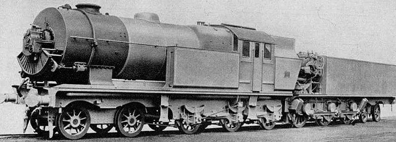
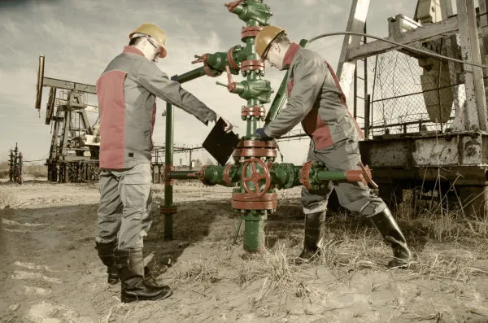
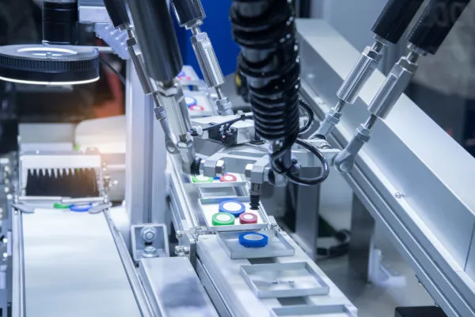
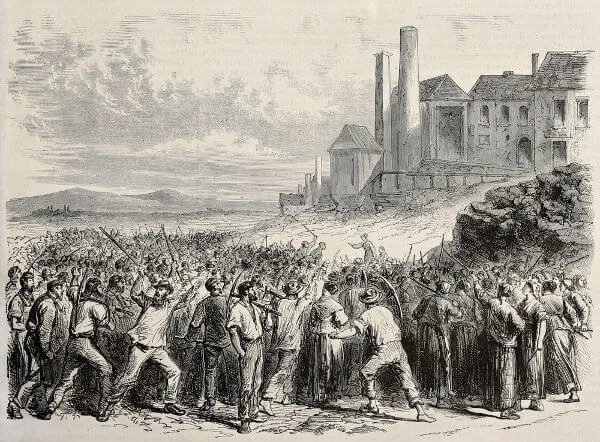
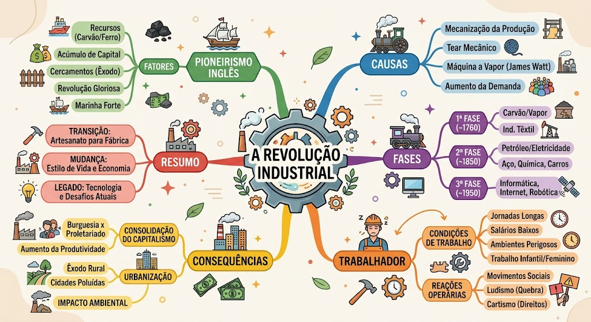

O que foi a Revolução Industrial?
A Revolução Industrial foi o evento histórico que causou grandes transformações nas relações de trabalho e no sistema de produção de sua época.
A Revolução Industrial foi o período de grande desenvolvimento tecnológico que teve início na Inglaterra a partir da segunda metade do século XVIII e que se espalhou pelo mundo, causando grandes transformações. Ela garantiu o surgimento da indústria e consolidou o processo de formação do capitalismo.
Essa revolução foi iniciada de maneira pioneira na Inglaterra, a partir da segunda metade do século XVIII, e atribui-se esse pioneirismo a essa nação pelo fato de que foi lá que surgiu a primeira máquina a vapor, em 1698, construída por Thomas Newcomen e aperfeiçoada por James Watt, em 1765. O historiador Eric Hobsbawm, inclusive, acredita que a Revolução Industrial só foi iniciada de fato na década de 1780.
Causas da Revolução Industrial e o pioneirismo inglês
A Revolução Industrial teve início na segunda metade do século XVIII na Inglaterra devido a uma combinação única de fatores políticos, sociais, econômicos e geográficos. O pioneirismo inglês foi impulsionado pelo fim do absolutismo após a Revolução Gloriosa em 1688, que transformou o país em uma monarquia parlamentarista e garantiu que a burguesia pudesse governar para atender aos seus próprios interesses econômicos.
Para acumular o capital necessário para o investimento nas indústrias, os Atos de Navegação de 1651, decretados por Oliver Cromwell, determinaram que o comércio inglês só poderia ser transportado por navios do próprio país, protegendo o mercado e enfraquecendo a concorrência. Além disso, a Lei dos Cercamentos (Enclosure Acts) transformou terras comunais em pastagens para a criação de ovelhas, expulsando os camponeses do campo e forçando um intenso êxodo rural em direção às cidades.
Sem terras e severamente proibidas de vagar pelas ruas devido a leis contra a vadiagem, essas pessoas tornaram-se a mão de obra excedente e barata que lotou as indústrias, submetendo-se a salários mínimos e jornadas exaustivas. Por fim, a Inglaterra contou com a vantagem geográfica de possuir grandes reservas abundantes de carvão e ferro, os dois materiais essenciais para o funcionamento e construção das máquinas que alavancaram a industrialização desenfreada.
Fases da Revolução Industrial
A Revolução Industrial corresponde às modificações econômicas e tecnológicas que consolidaram o sistema capitalista e permitiram o surgimento de novas formas de organização da sociedade. As transformações tecnológicas, econômicas e sociais vividas na Europa Ocidental, inicialmente limitadas à Inglaterra, em meados do século XVIII, tiveram diversos desdobramentos, os quais podemos chamar de fases. Essas fases correspondem ao processo evolutivo das tecnologias desenvolvidas e as consequentes mudanças socioeconômicas. São elas:
- Primeira Revolução Industrial;
- Segunda Revolução Industrial;
- Terceira Revolução Industrial.
→ Primeira Revolução Industrial
A Primeira Revolução Industrial refere-se ao processo de evolução tecnológica vivido a partir do século XVIII na Europa Ocidental, entre 1760 e 1850, estabelecendo uma nova relação entre a sociedade e o meio e possibilitando a existência de novas formas de produção que transformaram o setor industrial, dando início a um novo padrão de consumo. Essa fase é marcada especialmente pela:
- substituição da energia produzida pelo homem por energias como a vapor, eólica e hidráulica;
- substituição da produção artesanal (manufatura) pela indústria (maquinofatura);
- existência de novas relações de trabalho.

As principais invenções dessa fase que modificaram todo o cenário vivido na época foram:
- utilização do carvão como fonte de energia;
- consequente desenvolvimento da máquina a vapor e da locomotiva;
- desenvolvimento do telégrafo, um dos primeiros meios de comunicação quase instantânea.
A produção modificou-se, diminuindo o tempo e aumentando a produtividade; as invenções possibilitaram o melhor escoamento de matérias-primas, bem como de consumidores, e também favoreceram a distribuição dos bens produzidos.
→ Segunda Revolução Industrial

A Segunda Revolução Industrial refere-se ao período entre a segunda metade do século XIX e meados do século XX, tendo seu fim durante a Segunda Guerra Mundial. A industrialização avançou os limites geográficos da Europa Ocidental, espalhando-se por países como Estados Unidos, Japão e demais países da Europa.
Compreende a fase de avanços tecnológicos ainda maiores que os vivenciados na primeira fase, bem como o aperfeiçoamento de tecnologias já existentes. O mundo pôde vivenciar diversas novas criações, que aumentaram ainda mais a produtividade e, consequentemente, os lucros das indústrias. Houve nesse período, também, grande incentivo às pesquisas, especialmente no campo da medicina.
As principais invenções dessa fase estão associadas ao uso do petróleo como fonte de energia, utilizado na nova invenção: o motor à combustão. A eletricidade, que antes era utilizada apenas para desenvolvimento de pesquisas em laboratórios, nesse período começou a ser usada para o funcionamento de motores, com destaque para os motores elétricos e à explosão. O ferro, que antes era largamente utilizado, passou a ser substituído pelo aço.
→ Terceira Revolução Industrial

A Terceira Revolução Industrial, também conhecida como Revolução Tecnocientífica, iniciou-se na metade do século XX, após a Segunda Guerra Mundial. Essa fase representa uma revolução não só no setor industrial, visto que passou a relacionar o desenvolvimento tecnológico voltado ao processo produtivo também ao avanço científico, deixando de limitar-se apenas a alguns países e espalhando-se por todo o mundo.
As transformações possibilitadas pelos avanços tecnocientíficos são vivenciadas até os dias atuais, e cada nova descoberta representa um novo patamar alcançado dentro dessa fase da revolução, consolidando o que ficou conhecido como capitalismo financeiro. A introdução da biotecnologia, robótica, avanços na área da genética, telecomunicações, eletrônica, transporte, entre outras áreas, transformaram não só a produção, como também as relações sociais, o modo de vida da sociedade e o espaço geográfico.
Todo esse desenvolvimento proporcionado pelos avanços obtidos nas diversas áreas científicas se relacionam ao que chamamos de globalização: tudo converge para a diminuição do tempo e das distâncias, ligando pessoas, lugares, transmitindo informações instantaneamente, superando, então, os desafios e obstáculos que permeiam a localização geográfica, as diferenças culturais, físicas e sociais.
O trabalhador na Revolução Industrial
A Revolução Industrial também gerou grandes transformações no modo de produção de mercadorias. Antes do surgimento da indústria, a produção acontecia pelo modo de produção manufatureiro, isto é, um modo de produção manual que utilizava a capacidade artesanal daquele que produzia. Assim, a manufatura foi substituída pela maquinofatura.
Com a maquinofatura, não era mais necessária a utilização de vários trabalhadores especializados para produzir uma mercadoria, pois uma pessoa manuseando as máquinas conseguiria fazer todo o processo sozinha. Com isso, o salário do trabalhador despencou, uma vez que não eram mais necessários funcionários com habilidades manuais.
Isso é evidenciado pela estatística trazida por Eric Hobsbawm que mostra como o salário do trabalhador inglês caiu com o surgimento da indústria. O exemplo levantado foi Bolton, cidade no oeste da Inglaterra. Lá, em 1795, um artesão ganhava 33 xelins, mas em 1815, o valor pago havia caído para 14 xelins, e entre 1829 e 1834, esse salário havia despencado para quase seis xelins. Percebemos aqui uma queda brusca no salário, e esse se processo deu em toda a Inglaterra.

Além do baixo salário, os trabalhadores eram obrigados a lidar com uma carga de trabalho extenuante. Nas indústrias inglesas do período da Revolução Industrial, a jornada diária de trabalho costumava ser de até 16 horas com apenas 30 minutos de pausa para o almoço. Os trabalhadores que não aguentassem a jornada eram sumariamente substituídos por outros.
Não havia nenhum tipo de segurança para os trabalhadores, e constantemente acidentes aconteciam. O acidente mais comum era quando os trabalhadores tinham seus dedos presos nas máquinas, e muitos os perdiam. Os trabalhadores que se afastavam por problemas de saúde poderiam ser demitidos e não receberiam seu salário. Só eram pagos os funcionários que trabalhavam efetivamente.
Essa situação degradante fez com que os trabalhadores se mobilizassem pouco a pouco contra seus patrões. Isso levou à criação das organizações de trabalhadores (mais conhecidas no Brasil como sindicatos), chamadas na Inglaterra de trade unions. Os trabalhadores exigiam melhorias salariais e redução na jornada de trabalho.
Consequências da Revolução Industrial
A Revolução Industrial transformou radicalmente a economia, as relações sociais, o meio ambiente e o padrão de consumo global, gerando impactos específicos em cada uma de suas fases. Na Primeira Revolução, a substituição do trabalho humano por máquinas aumentou a produtividade, consolidou o capitalismo e deu início ao êxodo rural e à urbanização acelerada. Esse crescimento desordenado das cidades gerou sérios problemas sociais — como miséria, fome e violência — e dividiu a sociedade em duas classes antagônicas: a burguesia e o proletariado.
Com a Segunda Revolução Industrial, o avanço tecnológico permitiu a produção em massa, a ampliação do comércio global e o surgimento de metrópoles, acompanhados pelo avanço nos transportes. Contudo, essa fase intensificou o desemprego, a exploração de mão de obra barata, a superpopulação urbana e o avanço imperialista das nações ricas sobre outros territórios em busca de matérias-primas. Já a Terceira Revolução integrou ciência e tecnologia à produção, trazendo avanços na medicina, genética, robótica e comunicação, além de aproximar povos por meio da globalização e consolidar o capitalismo financeiro e as multinacionais.
Por fim, o conjunto de todas essas transformações alterou profundamente a relação do ser humano com a natureza, provocando uma exploração predatória dos recursos naturais e graves impactos ambientais. Hoje, as consequências desse modelo de desenvolvimento exigem debates globais urgentes sobre a necessidade de adotar práticas sustentáveis para garantir o futuro das próximas gerações.
Cartismo e ludismo
Dois grandes movimentos de trabalhadores que surgiram dessas organizações foram o ludismo e o cartismo.
O ludismo teve atuação destacada no período entre 1811 e 1816, e sua estratégia consistia em invadir as fábricas e destruir as máquinas. Isso acontecia porque os adeptos do ludismo afirmavam que as máquinas estavam roubando os empregos dos homens e, portanto, deveriam ser destruídas.
O movimento cartista, por sua vez, surgiu na década de 1830 e lutava por direitos trabalhistas e políticos para a classe de trabalhadores da Inglaterra. Uma das principais exigências dos cartistas era o sufrágio universal masculino, isto é, o direito de que todos os homens pudessem votar. Os cartistas também exigiam que sua classe tivesse representatividade no Parlamento inglês.
A mobilização de trabalhadores resultou em algumas melhorias ao longo do século XIX. A pressão exercida pelos trabalhadores dava-se, principalmente, por meio de greve. Uma das melhorias mais sensíveis conquistadas pelos trabalhadores foi a redução da jornada de trabalho para dez horas diárias.
A mobilização de trabalhadores enquanto classe, ou seja, pobres (proletários), não foi um fenômeno que surgiu especificamente por causa da Revolução Industrial. Nas palavras de Eric Hobsbawm, o enfrentamento dos patrões pelos trabalhadores aconteceu porque a Revolução Francesa deu-lhes confiança para isso, enquanto “a Revolução Industrial trouxe a necessidade de mobilização permanente”.
Resumo
- A Inglaterra foi a nação pioneira no desenvolvimento industrial e tecnológico no mundo.
- Por meio da Revolução Industrial, o capitalismo consolidou-se como sistema econômico vigente.
- O desenvolvimento da máquina a vapor é considerado como o ponto de partida da Revolução Industrial.
- Causou profundas transformações no modo de produção e também nas relações entre patrão e trabalhador.
- Durante o auge da Revolução Industrial, os trabalhadores ingleses recebiam salários baixíssimos e eram obrigados a suportar uma longa jornada de trabalho.
- A intensa exploração do trabalho do proletário fez com que os trabalhadores se organizassem em sindicatos.
- Dois movimentos de trabalhadores foram muito importantes no século XIX: o ludismo e o cartismo.
- A Revolução Industrial aconteceu de maneira pioneira na Inglaterra por uma junção de fatores, que englobam as grandes reservas de carvão do país, os cercamentos, o excedente de capital existente no país etc.
- As transformações econômicas, sociais e tecnológicas proporcionadas pela Revolução Industrial dividem-se em fases, segundo os avanços produtivos, no campo científico e em diversas outras áreas do setor econômico e industrial.
- Pode-se dividir a Revolução Industrial em: Primeira Revolução Industrial, Segunda Revolução Industrial e Terceira Revolução Industrial.
- Diversas foram as consequências da Revolução Industrial. Houve aumento da produtividade, mudança nas relações de trabalho, alterações no modo de vida e padrões de consumo da sociedade; alterou-se a relação entre o homem e a natureza, houve avanços em diversos campos do conhecimento, entre outras mudanças.
Mapa mental com resumo sobre a Revolução Industrial
